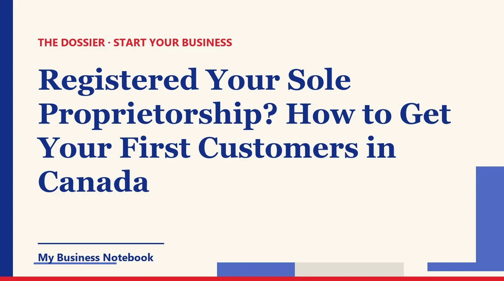

Registered Your Sole Proprietorship? How to Get Your First Customers in Canada
The paperwork is done. Maybe you registered a business name in Ontario, filed a trade name in Alberta or kept your own name in BC. Now the business needs customers, and nobody can hire a business they can't find. This guide covers what registration does and doesn't do for you, how to get on Google for free, and how to reach other businesses without breaking Canada's anti-spam law.

The short answer
Registering your sole proprietorship makes the business legal. It doesn't make it known. To get your first customers in Canada, you need three things in this order: one name used everywhere, a Google Business Profile people can find, and outreach that respects Canada's anti-spam law.
That last part is where Canadian owners trip up. Cold email advice written for the US market doesn't fit here. Canada's Anti-Spam Legislation (CASL) is stricter, and this guide shows you what you can and can't send.
Sole proprietorship: do I need to register?
It depends on the name you trade under and on your province. In Ontario, Alberta and BC the logic is similar: if you do business under your own personal name, you generally don't register a business name. If you use any other name, you do.
- Ontario: the province says you need to register your sole proprietorship if you are not using your own name as your business name. You register through the Ontario Business Registry, and the online fee for a sole proprietorship is C$60. The registration is valid for 5 years, and you can renew from 6 months before it expires.
- Alberta: a trade name is what you use when you do business under a name other than your own. You file a Declaration of Trade Name through an authorized registry service provider.
- British Columbia: if you do business under your own name, the province says you don't need to request a name or register. Otherwise you request a name through BC Registries (C$30) and then register the business (C$40).
One detail matters for marketing. Alberta states plainly that registering a business name does not give you ownership of it. Ontario lists "your business name is not protected" as a drawback of a sole proprietorship. So search the name before you print anything, and check it's free on Google and social networks too.
Your city may also require a municipal business licence, separate from provincial registration. BC points this out on its registration page. Check with your municipality before your first job.
Sole proprietorship business number: when you need one
A business number (BN) is the identifier the Canada Revenue Agency (CRA) uses for your business. According to the CRA, if your business is unincorporated, you only need a BN when you register for a CRA program account, such as GST/HST or payroll.
GST/HST is usually the trigger. You stay a small supplier as long as your taxable sales don't exceed C$30,000 over four consecutive calendar quarters. If you go over C$30,000 in a single calendar quarter, you must register, effective no later than the day of the sale that took you over.
You can also register voluntarily below the threshold. Some sole proprietors do it because their business customers expect a GST/HST number on invoices. Ask an accountant whether that makes sense for you, since charging tax also changes your prices for consumers.
Pick one name, then use it everywhere
Before you list the business anywhere, write down its exact name, address and phone number. Then copy and paste that same block every single time. Consistency is what lets Google and customers connect your listings to one real business.
"Northshore Renos" on your registration, "North Shore Renovations" on Google and "NS Renos" on Facebook look like three different companies. Use the name you registered (or your own name, if you didn't register one) on your invoices, your profile, your email signature and every directory.
Keep a simple list of every place you appear, with the login for each. When you move or change numbers, you'll update everything in one afternoon instead of finding an old address two years later.
How do I get my business on Google?
You create a Google Business Profile. Google says you can add or claim your business at no charge, so anyone calling to offer you a paid "Google registration" is selling something you can do yourself.
- Search for your business first. If a profile already exists and nobody has verified it, open Google Maps, select "Claim this business", then "Manage now".
- Otherwise, add it at business.google.com/add, using your real business name without extra keywords.
- Choose the most precise category you can find. It shapes which searches you show up in.
- Verify. Depending on the business, Google offers a phone call or text, an email, a live video call or a code by mail.
Plan ahead. Google says verification reviews take up to 5 business days, and most mailed codes arrive within 14 days. Start this the week you register, not the week you run out of work.
Working from home or on the road
Plenty of sole proprietors are mobile: snow removal, cleaning, bookkeeping, dog walking, the trades. Google tells service area businesses to remove their address if they don't serve customers there. You can list up to 20 service areas instead, such as cities or postal codes.
Keep it realistic. Google's guidance is that your overall area shouldn't extend more than about 2 hours of driving from where you're based. A painter in Mississauga shouldn't claim all of Ontario.
How to advertise my business locally
Once the profile is live, fill it in completely: hours, phone, a short description in plain words, and real photos of your work. Then ask your first happy customers for a review, and reply to each one.
- Walk your own neighbourhood. Introduce yourself to shops and trades that serve the same people you do. A home organizer and a real estate agent in Calgary can send each other work for years.
- Join what's already there. Your local chamber of commerce, the business improvement area if your street has one, community Facebook groups. Be useful first and sell second.
- Add the other maps. iPhone users search in Apple Maps, and some people still use Bing. Claim your business there with the exact same details.
- Tell people you know, in one sentence: what you do, for whom, and how to reach you.
How to get business customers
If you sell to other businesses, don't wait for them to find you. Build a short list and contact them directly. Thirty well-chosen prospects beat three hundred random ones.
- Define the target: type of business and area. "Independent restaurants on Whyte Avenue in Edmonton" is a target. "Small businesses in Alberta" isn't.
- Note where each email address came from. In Canada this is more than good practice. You'll see why in the next section.
- Write about their problem in three or four sentences, with one easy question at the end.
- Follow up once or twice, a few days apart, and stop if they say no.
The channel matters. A visit in person or a phone call is often the fastest way to open a door locally. Email scales better, but in Canada it comes with rules you need to know before you press send.
Cold email in Canada: what CASL actually allows
CASL covers commercial electronic messages: email, texts and similar messages that encourage someone to take part in a commercial activity. The core rule is simple. You need the recipient's consent before you send, and every message must identify you and offer a way to unsubscribe.
Canada has no general free pass for business to business email, so writing to a company can still require consent. The law also closes an obvious loophole: an email asking for consent is itself treated as a commercial electronic message. A cold "Can I send you our offer?" doesn't get you around the rule.
Express or implied consent
Express consent is a clear yes, like someone signing up on your website. Implied consent exists only in situations the Act lists. Three are useful for a new sole proprietor:
- An existing business relationship: the person bought from you within the past two years, or made an inquiry to you within the past six months.
- Conspicuous publication: the person published the address you write to (on their website, for example), without a statement saying they don't want unsolicited commercial messages, and your message is relevant to their business, role, functions or duties.
- Disclosure: they gave you their address themselves, on a business card for instance, without saying they didn't want messages, and your message relates to their business role.
In practice, conspicuous publication is how careful cold outreach works in Canada. A bakery owner lists her email on her "Contact" page. You offer bookkeeping for small food businesses, which is relevant to her role. Pitching her a personal travel deal would not be.
What every message must include
- Who you are: your name, or the name you do business under.
- How to reach you: a mailing address, plus a phone number, an email address or a web address.
- An unsubscribe mechanism that stays valid for at least 60 days after sending. Requests must be honoured without delay, and no later than 10 business days.
Keep proof. The Act puts the burden of proving consent on the person who claims to have it. A dated screenshot of the page where you found the address takes ten seconds.
The stakes are real: the maximum penalty is C$1,000,000 per violation for an individual and C$10,000,000 for any other person. CASL doesn't apply to a live, two-way phone conversation, but telemarketing has its own CRTC rules, so read those if you plan to call a lot of people.
The tool that keeps all of this in one place
You can do everything above by hand. But between directories to keep in sync, a prospect spreadsheet, consent notes and follow-ups, most owners lose track within a month. That's why we recommend Kaptor, a platform built for businesses that are just starting out.
Kaptor
Kaptor puts in one place what usually takes a handful of separate tools:
- Visibility: your business listed on the directories that matter for your country and trade (more than 120 listings), with the same details everywhere, tracked listing by listing, and alerts when information goes out of date.
- Google Business Profile: help creating or claiming it, a heads-up on missing fields, and help asking for and tracking reviews.
- Prospecting: businesses to contact by trade and area (a city, a province or another country), with contact details, ranked by AI from hottest to coldest, in a pipeline from "to contact" through to "won" or "dismissed".
- Emails and follow-ups: sent from your own address or domain, automatic follow-ups, unsubscribe built in, replies in one place. Nothing goes out without your approval, so you decide who gets contacted and on what basis.
- Website or blog: no website yet? Kaptor generates one with a contact form. Already have one? It generates an SEO blog that points back to it.
You can open a free space to try it. Paid plans are Starter at $89 a month, Growth at $149 and Agency at $499, billed in US dollars, with no contract. The built-in unsubscribe helps, but checking that each contact fits a CASL consent basis stays your job.
Can Canadian customers find you right now?
Kaptor's free audit searches for your business on the directories in your country and shows you where you're listed, and where customers can't find you. No credit card, no sign-up.
Run my free auditRead next: once invoices start going out, get the basics right with Small Business Taxes Explained, and keep the money side steady with our cash flow guide.
FAQ
Sole proprietorship: do I need to register in Canada?
It depends on your province and your name. In Ontario, Alberta and BC, you generally register only if you trade under a name other than your own. Ontario charges C$60 online for a sole proprietorship, valid 5 years. BC charges C$30 for the name request and C$40 to register.
Does a sole proprietorship need a business number?
According to the CRA, an unincorporated business only needs a BN when it registers for a CRA program account, such as GST/HST or payroll. You must register for GST/HST once your taxable sales exceed C$30,000 in a single calendar quarter or over four consecutive quarters.
How do I get my business on Google for free?
Add or claim a Google Business Profile at business.google.com/add. Google says it's free. Pick a precise category, then verify. Verification reviews take up to 5 business days, and mailed codes usually arrive within 14 days.
Can I send cold emails to businesses in Canada?
Only with consent. Implied consent can come from conspicuous publication: the person published the address without a statement refusing unsolicited messages, and your message is relevant to their business role. Every message must identify you and include a way to unsubscribe.
How to advertise my business locally in Canada?
Complete your Google profile, ask early customers for reviews, claim Apple Maps and Bing listings with the same details, join your chamber of commerce or business improvement area, and introduce yourself to businesses that serve the same customers.
Does registering my business name protect it?
No. Alberta states that registering a business name does not grant ownership of it, and Ontario lists an unprotected name as a drawback of a sole proprietorship. Search the name before you print cards or create listings.
Official sources
- Ontario: Decide on the ownership structure for your business : when a sole proprietorship must be registered, unprotected name.
- Ontario: Cost and time to register a business name : C$60 online registration and renewal.
- Ontario Business Registry: all services : 5-year validity and renewal window.
- Alberta: Register a business name : trade names, registry service providers, no ownership of the name.
- BC: Sole proprietorships and partnerships : when to register, C$30 name request and C$40 registration.
- CRA: Do you need a business number or program account? : when an unincorporated business needs a BN.
- CRA: When to register for and start charging the GST/HST : the C$30,000 small supplier threshold and voluntary registration.
- Canada's Anti-Spam Legislation (S.C. 2010, c. 23) : consent, implied consent, unsubscribe, burden of proof and maximum penalties.
- Electronic Commerce Protection Regulations (CRTC) : identification information required in each message.
- Google Business Profile Help: Add or claim your Business Profile : free to add or claim, steps.
- Google Business Profile Help: Verify your business : verification methods and timing.
- Google Business Profile Help: Manage your service areas : removing your address, up to 20 service areas, about 2 hours of driving.
- How to Advertise Your Business Locally for Free in the UK
- How to Get Your Business on Google Maps for Free (Step by Step)
- Got your ABN? Here's how to get your first customers
- How to Get Your New Business Noticed (Even With No Marketing Budget)
- How to Market a Small Business Locally: A Playbook for Service Trades
- Sole Trader? How to Get Customers as a New Business
- Sole Trader in Ireland: From CRO Registration to Your First Clients